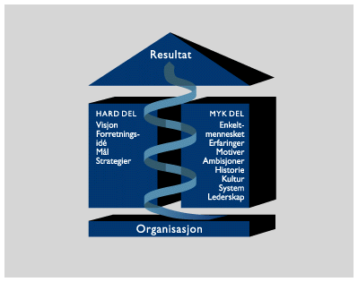

Vår kjernevirksomhet er å støtte bedrifter i å få til vesentlige endringer i praksis. Dette baseres på et samspill mellom forretningsmessige og personellmessige faktorer. Vi er også opptatt av å gi organisasjonene et "løft" og skape forutsetninger for kontinuerlig forbedring.Indevos tilnærming er også basert på at endringer skal gjøres basert på et strategisk fundament. Det betyr i praksis at vi bidrar til å implementere strategiene fastlagt av ledelsen. Videre tror vi at et prosessorientert tankesett er vesentlig for å forenkle strukturer og arbeidsprosesser og for å forbedre samarbeidet på tvers i organisasjonen.
Vår erfaring er videre at det er vesentlig å bruke den kompetanse en organisasjon besitter gjennom involvering i utviklingsprosesser. Dette skaper energi og forankring av nye løsninger og dermed en forutsetning for å lykkes i gjennomføringen.
Tilbake til hovedmeny